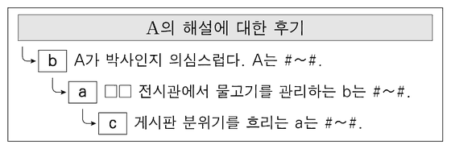

인터넷 ID와 명예
지문을 먼저 읽고, 이해가 막히는 문단에서 ‘그림으로 보기’를 누르세요. 그림은 문단을 따라 바뀝니다.
1문단리프킨은 사회적 상호 작용에서의 자기표현은 본질적으로 연극적이며, 표면 연기와 심층 연기로 ⓐ이루어진다고 언급했다. 표면 연기는 내면의 자연스러운 감정보다 의례적인 표현과 같은 형식에 집중하여 연기하는 것이고, 심층 연기는 내면의 솔직한 정서를 ⓑ불러내어 자신의 진정성을 보여 주는 것이다. 인터넷에서의 커뮤니케이션에 주목한 리프킨은 가상 공간에서 자기표현이 더욱 활발히 이루어진다고 보았다.
2문단가상 공간의 특성에 주목한 연구자들은 사람들과의 관계 속에서 드러나는 고유한 존재로서의 위상을 뜻하는 자기 정체성이 가상 공간에서 다양하게 ⓒ나타난다고 본다. 가상 공간에서는 익명성이 작동하므로 현실에서 위축되는 사람도 적극적으로 자기표현을 할 수 있다. 아울러 현실에서의 자기 정체성을 ⓓ감추고 다른 인격체로 활동하거나 현실에서 억압된 정서를 공격적으로 드러내기도 한다. 게임 아이디, 닉네임, 아바타 등 가상 공간에서 개별적 대상으로 인식되는 ‘인터넷 ID’에 대한 사이버 폭력이 ⓔ넘쳐 나는 현실도 이와 무관하지 않다.
3문단사이버 폭력과 관련하여, 인터넷 ID만을 알고 있는 상황에서 그에 대해 명예훼손이나 모욕 등의 공격이 있을 때 가해자에게 법적인 책임을 물을 수 있는지에 대한 논란이 있어 왔다. 이는 인터넷 ID가 사회적 평판인 명예의 주체로 인정될 수 있는가와 관련된다. 인터넷 ID의 명예 주체성을 ㉠인정하는 입장에 따르면, 자기 정체성은 일원적·고정적인 것이 아니라 현실 세계와 가상 공간에 걸쳐 존재하고 상호 작용하는 복합적인 것이다. 인터넷에서의 자기 정체성은 사용자 개인의 자기 정체성의 일부이기 때문에 자기 정체성을 가진 인터넷 ID의 명예 역시 보호되어야 한다. 반면 ㉡인정하지 않는 입장에 따르면, 생성·변경·소멸이 자유롭고 복수로 개설이 가능한 인터넷 ID는 그 사용자인 개인을 가상 공간에서 구별하는 장치에 불과하다. 인터넷 ID는 현실에서의 성명과 달리 그 사용자인 개인과 동일시될 수 없고, 인터넷 ID 자체는 사람이 아니므로 명예 주체성을 인정할 수 없다는 것이다.
4문단㉮대법원은 실명을 거론한 경우는 물론, 실명을 거론하지 않았더라도 주위 사정을 종합할 때 지목된 사람이 누구인지를 제3자가 알 수 있는 경우에는 명예훼손이나 모욕에 대한 가해자의 법적 책임이 성립한다고 판시해 왔다. 이를 수용한 헌법재판소에서는 인터넷 ID와 관련된 명예훼손·모욕 사건의 헌법 소원에 대한 결정을 내린 바 있다. 이 결정에서 ㉯다수 의견은 인터넷 ID만을 알 수 있을 뿐 그 사용자가 누구인지 제3자가 알 수 없다면 피해자가 특정되지 않아 명예훼손이나 모욕에 대한 가해자의 법적 책임이 성립하지 않는다고 보았다. 반면 인터넷 ID는 가상 공간에서 성명과 같은 기능을 하므로 제3자의 인식 여부가 법적 책임의 근거가 될 수 없다는 ㉰소수 의견도 제시되었다.
윗글을 바탕으로 <보기>를 이해한 내용으로 적절하지 않은 것은? [3점]
○○ 인터넷 카페의 이용자 A는 a, B는 b, C는 c라는 ID를 사용한다. 박사 학위 소지자인 A는 □□ 전시관의 해설사이고, B는 같은 전시관에서 물고기 관리를 혼자 전담한다. 이 전시관의 누리집에는 직무별로 담당자가 공개되어 있다. 어떤 사람이 전시관에서 A의 해설을 듣고 A의 실명을 언급한 후기를 카페 게시판에 올리자 다음과 같은 댓글이 달렸다.

(단, ‘#～#’는 명예를 훼손하거나 모욕을 주는 표현이고 A, B, C는 실명이다. ID로는 그 사용자의 개인 정보를 알 수 없으며, A, B, C의 법적 책임에 영향을 미치는 다른 요소는 고려하지 않는다.)